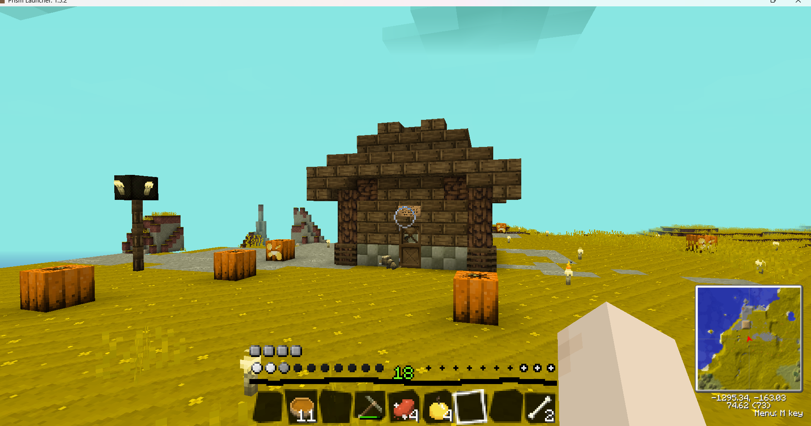
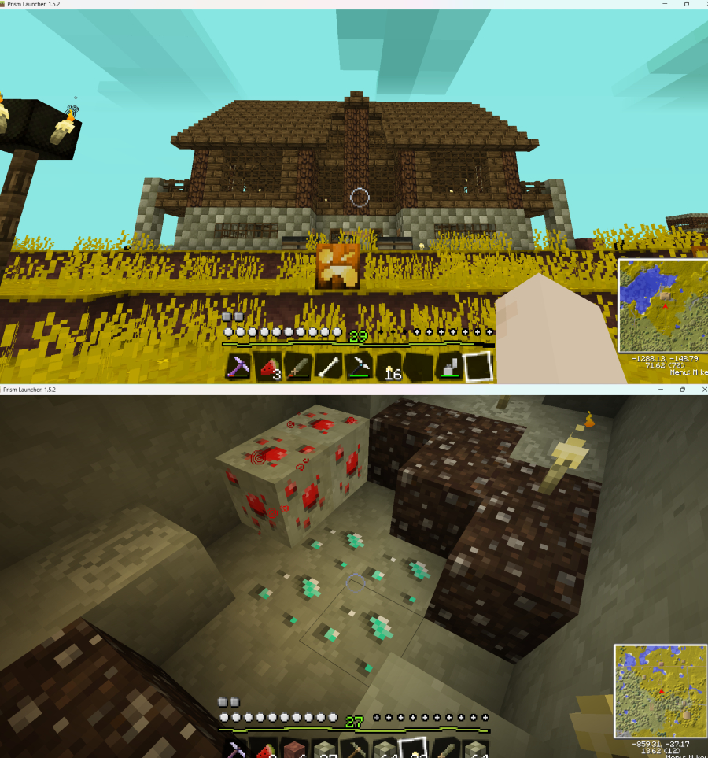

Hi It was a pain to get this blog set up but im pretty happy with the results even if its kinda rough it still looks good enough for me Idk what im gonna do about the nav bar bc eventually it will get filled all the way but ill figure it out for now I got a bunch of time to write here anyways getting to my life now im going to see the beach boys live at concert on june 7 and its gonna be great im going to get to see charlotte too witch is always nice ive been having this recurring idea of messing with mike love by hoping onto the stage and begging him to sing “ johnny carson” since thats a weird beach boys song and hes the lead vocal on it personally I love the song but hes such a narcissist that I could totally see him freaking out live on the stage or he would just have security kick me off the stage idk its just funny to think about im thinking its going to be fun and hopefully im not going to be the youngest person there stuck in a sea of boomers that would be very awkward

I finaly got build acess in the melonland mc server and I built this temporay house and some one thought it was so cool that they told me they would build it themselves and that was neat another player gave me some random loot and I found 2 dogs and breeded them to make 3 so thats cool too so not a bad start to my first time with build acsess still its very bugy and aparently its bc of a softeware issue caused by the drivers im not sure how to fix it but for now its not a huge deal another thing (unrelated) is this person they deleated their whole site and had some text up saying some stuff about why they were tired of web revival and tbh its very dramatic and very confusing to me Ive never seen anyone act that stuck up about web revival so im confused about who they are talking about and its also a little over kill to delete your whole site you cant really call ppl out for their behavior if your just complaing about the comunity as a whole I think they over look the fact that their are no bigots here or any rude ppl its a more comfertable area of the internet and thats why I preffer it not bc I think the surface web is inheritay flawed or somthing tho I do think that if AI gets any better than it might become that way but thats a whole seprate thing the point is that I still use plenty of surface web sites and I enjoy them too and its just strange to hear that some ppl here are really that narcisitic about internet revivival solbeth if your reading this then I hope this dosent sound rude I am just very lost and Idk think you should just quit everything bc of large amount of ppl are being anoyying here if you want to actually expalin what that was all about then feel free to email me

so the beach boys concert was pretty fun but my perdictions were correct I was in a mass of bommers there were mabey 4 or 5 ppl my age that came on their own volition so I was pretty bummed out by that but I guess they were all die hard fans anyways even if they were more about all the beach rock then all the boundary pushing art at least at the time it was made anyways it was the sounds of summer tour so I didint get to hear any of the more artsy stuff but I did get to hear "good vibrations" and "wouldent it be nice" and that was really fucking cool and mike love wasant a butt like I was excpecting but ive still seen some hate against him so idk he seems fine to me tho and of course john stamos was there and thats cool I guess I olny really know him from full house I had no idea that he had such a long history with the beach boys over all it was a pretty cool concert and I def loved it the olny thing I didint like was that money I spent that was a mistake I think I would have starved If I hadent tooken my sister with me the food was def outside of my budget but it sadly didint stop me from buying it ¯\_(シ)_/¯ any ways on a completly seprate note Im finishing high school now and thats really cool too im gonna head to comunity collage for my credits that way I can avoid my core classes when I get to university I FUCKING HATE MATH AND I THINK ITS A FORM OF TOUTURE and I know thats odd for me to say considering I am going into computer science but at least in that ill be solving stuff and getting results and not just some boring stuff for paper pushers who could care less about my passions and hobbies OLD FARTS they dont know me at least in IT ill feel at home and thats motivation for me and also the fact that ive always wanted to be a scientist ever since I Was really little (yes I am trying to get my doctorate well see if that works out) switching topics again to the minecraft server....im really pissed off bc Im dealing with lots of glitches and my game is all messsed up and theres nothing I can do to fix it until I get help ╥﹏╥ I really want to play but I just cant rn I need to focues on my website a little more anyways ive been missing on my blog bc of the server but It bc I was havnig fun so I guess there are pros and cons but it is what it is really I love bulding things in sandbox games and it gets addicting and then Im kinda bummed out when I cant do it I think being able to channle that into stuff like my website and just computer stuff will really help me in the future I could get really good at it if Im excited enoght by it its definitely going to be super fun for me when I get the chance anyways that was my week what about yours?
I waited 8 hours to take my test today out at the DMV it was my thrid time taking it and im so lucky I passed im finaly getting ahead in life and it feels good I can finaly drive my own car and soon I can take my road test to get my actual liscense so Im super happy about that insurance is going to be anoyying tho I might have to wait until im 19 or 20 until im a real adult and even then I could still fall apart but im working towards it im going to sleep so good tonight tommorow I get to drive myself to work ≽^•⩊•^≼
what were the chances that he would die so soon after me going to the concert thank god it was a mike love concert or I Would have been in tears at least brian finally got the freedom he needed hes finally free from all that pain and drama and now we can honor his legacy and remmeber him for as long as we can Its sad that he died so early he could have had so many more years and I mean my grandparents are around his and his wifes age and they are still around it feels very unfair but theres nothing to do about it the beach boys are pretty much gone now im sure al jardine and mike love could keep the music alive a little longer but it wouldent feel the same for me they cant play "lets put our hearts together" they cant play "just say no" they cant play "one kind of love" we lost so much with brians passing all his most personal songs are banished from the future and are now a part of the past and that really bums me out he felt so inspireing to me he was so realatable and I really empathized with him im disapointed that hes gone I wont ever feel the same about anyone else writeing all that kinda makes me too bummed out to talk about my plans for hosting I was excited to talk about but its doesent matter as much anymore I should do more research anyways

it's nothing new at all i've just never felt like it was important to say and I always thought it was weird when ppl would unload a bunch of mental disorders into their bio's i've been diagnosed since I was 4! when I was much younger I was more low functioning then not ( I had to fix that IDK why I put high functioning I think I mixed the two up ) I have what pepole used to call "aspergers" but im aware that its not called that anymore but Idk what else it call it so bare with me here anyways moving away from that ive been masking it in some shape or form since late middle school and while I dont try as hard anymore most ppl IRL dont realize that im on the spectrum since I never talk about it online or have it in any bio so pepole dont usally know online unless I mention it in passing or If I told someone privtely this has led to me not fitting in well online and I always ecepted that in real life and online I just kept to myself and that really hurt me socially and I wish I could have seen that it almost feels like its too late to do anything now and im just not greatist I just say whatevers on my mind and I just wedge my way into spaceses where I dont belong asking loaded questions or just being stupid or rude and I waste pepoles time and I always just end up leaving it for somthing more solitary and I dont feel like anyone has the time for that like I dont think adding " im on the specturm" to all my social media and internet stuff is going to change the way pepole interact with me and if It did then I dont think I would like that I spent to much time with pepole like that and thats a big reason why I mask in real life it always felt better to just be treated like a neurotypical person and to just accept the consuqunces when I did things that were odd or things that got on pepole nerves but I kinda realize the differance in the internet pepole will just straight up ingnore you a lot of the time especially if you cant read the room like me and a lot of places Ive found I just dont even feel like I belong in even when its tied to something I like I can just olny handle individual pepole who I can specificlly feel comfertable around and that always made it impossible for any meaningful conections in large comunities or on social media I mostly avoided it all up until now since ive got the indie web and I made 2 friends on discord and I email “https://neocities.org/site/shapelesswhistle"> sandal of course when I can and I enjoy the melon land forms but I just can't get any further than that and now that I work a job it's just totally impossible for me to talk to people in my real life bc im just so drained from work every week that I just can't stand talking to people all of that is here bc I made irresponsible decisions about my life and now I have very few ways to make any new friends and I have all of that only at 18 years of life! life is a big bummer and I know this may sound depressing but sometimes I feel like im not even functioning like a normal human being I dont act like anyone online or in my life it all looks easy until I try to do it so I gave up on so much of it I havent done anything signifigant with my life becuase I have nothing to work towards that makes me feel right and I just dont understand what words I want to hear pepole say to me everwhere feels so unperdictable to me and when I hear nothing I feel very lost and I guess thats pretty unfair so I hold nothing against the pepole who decieded to not talk with me I was A nothing burger in high school and I rarely talked with strangers and online I never bothered after a certin point but all this has come to mind now that ive been exploring comunities and pepole online seriously for the first time I guess im built better for a website over anything else Ill find the time to update soon really I just need to take some classes already I hope this all didint come out wrong

sandal told me recently that they found an old Ipod in their house and that remminded me about my ipod shuffle that I grew up with I miss it a lot and I have no idea where it is I gave it to my baby sister and it was lost to the cosmos never to be seen again im not even sure if it worth looking for bc It might not even be in my house!!!!! its cool things like my shuffle that give me a biased opinion of the 2000's and of course my mall looked amazing then and they were so souless to remodel it its funny bc the upload has comments turned off and dislikes too clearly no one liked the remodel I guess im not the olny one anyways moving away from that I have everything I need to host with me right now or comming in the mail so im really excited about that I cant wait to get started bc its gonna be such a learing experiance and mabey I could even make my own little forums spot for femboy clothes or somthing like that of course paying for a domain name is going to be anoyying but for 10 dollars its very nice compared to the 5 I pay now and Ill have all the storage that I have with me witch is like more than double what I have now and thats if I dont add more later on I mean really I Can just do more and thats what I want and to get away from this host bc im kinda tired of it and tbh its not even the anti sensorhip stuff its getting boring to me and the bulk of the sites here all genrally look the same and thats fine its just not as fun as say using the melonland fourms to browse sites and honstely the soical side of this site isint as good as what nekoweb has but I have other gripes about that host too really I just what more control over my site neocities wont last forever and I just want MY SPACE TO MYSELF so thats what im working towards freedom to become more of a web master and less of a web serf of course im just being be dramatic with that anoylogy but I do feel like I should have maxium fredom and the indie web is just so small outside of neocties if I really did make a fourms or any kinda site for pepole to chill in I wouldent have to worry about it getting out of control and thats very cool for me
ive been going to concord mills since I was as toddler and the first thing I would alwayas want to do is look at he fish that they have at bass pro shop and this time I noticed something intretsting this fish had a red lump on its lip and it looked simaler to a picture of a shark I had seen that had cancer and while im not sure if all fish can get cancer it def looked like the fish had cancer growing on its face so I guess thats interesting I was going to watch a movie but the olny good ones were showing really late so I decieded not to go see them over all it was pretty uneventful besieds the fact that spencers told me they were hiring so thats going to be really nice if they hire me bc my job rn is way to physiclly demaning for me to handle another thing is yesterday I found a black bag full of empty bush beer cans on my front lawn and I had to throw them away its really scary that some pepole drink so much while driving espically now that im driving my self for the first time anyways that was my somewhat notible day
ive been wanting to learn to really update more but ive just been working so hard and I come home so tired its a little disheartening to earn a paycheck I cant really use and have my creative spirit crushed at the same time and I also have so much room for improvment its one thing to find what your good at but its a whole another thing to keep up and not let yourself fall behind everyone else and even with discipline I could always be worse than some one else right now im not really any better then any random person could be it would just take time for some one unfimilar with the programs to get things running and by that point a person could be better than me I have to actually work to make better stuff and thats hard for me to want to do when im working so hard physically at my place of work I want to quit but it wouldent be smart to do that and im not sure where to find a job where im not talking to pepole all the time and where im not being physically challanged so much I know that sounds like im being lazy but thats just how I feel about work it just dosent feel fair to be excpected to do work and have hobbies too and I cant imagine how tough its going to be when I move on to collage even with free time I just dont feel like using it all the time moving on to the other things that were on my mind I really love the melonland fourms but its just so empty all the time and while thats nice for getting to know the pepole that are frequent users it still makes it a struggle to engage when making posts Ive found that its fun to find new pepole and browse sites and comment on other pepoles posts and art but its not fun trying to make a post partially its my fault that my posts dont get attention usally bc Its a stupid post but sometimes its a genuine question that goes unanswerd a lot of pepole dont browse often and there are olny around 2000 members and thats not counting the ones that arent active anymore I was really disapointed when random_tangent delteted their account and website I had a lot of fun playing on the MC server with them and talking a little bit when I could and they didint even say goodbye they luckily made a new website but all their art is gone along with their profile!!!!! theres no way for me to contact them anymore witch is disapointing bc most pepole ive meet there I have a hard time talking with and that person was easy to talk with its clear to me now that they didint want anyone following them so I guess ill have to let that go the fourms are great for having fun but its not really a place for finding long term friends it really is a fourm at its core and I love it for that but I think its time for me to look for new friends in a diffrent setting I would say I could do that in my real life but I dont really have the means for that right now but once I get my liscence or head to collage I should be fine
I dont mess with the furry comunity becuase it bothers me that its so sexual for some pepole and honestly it bothers me to know that some pepole would be seeing things in such a sexual way even if its just normal I cant be around places like that online and it's even worse now that im a legal adult pepole can just say what they want around me and now im responsible for finding spaces where they arent like that and thats just unfair sometimes and I dont mind not being involved with furries but I really hate how fetishized femboy stuff is I really hate It I just want to wear a nice outfit while other pepole are just getting excited by it and they want to socialze with those pepole and flirt I basicaly dont talk with pepole in those comunites I just comment bc chances are they are just looking to date pepole and it makes me mad bc there are a million diffrent places online they can go to get explicit but they chose to keep those feelings inside and make it more of a sexual thing then it really is I feel like they should just ban flitering and posts that show to much or are made with a sexual intent insted of making puerly 18+ spaces
if I cant find anyone to talk about it then im going to have to read the manga bc im just really not thinking about it as much I used to I caught up and now ive been waiting for months and there hasant been any more released and I have no one to talk to about it I think I could also make a shrine but IDK I could go out and find pepole who are big fans but Im not really comfortable with that community espcially since they made a bunch of stuff where they "aged up" legoshi and thats just really fucking weird and im not take chances with the fans if some of them are thirsting over an underage chracter I could bother tommie but I would just be pestering him and im not sure he would watch it I always wish I could stay intrested in things forver but eventually I get bored or im forced to stop like when in elematary school my principal banned pokemon card's (asshole!) I want to have fun but there isint always pepole there to enjoy things with me usally its my fault so im trying to fix that now if you want to talk about the anime with me then please do I would love it!!!!